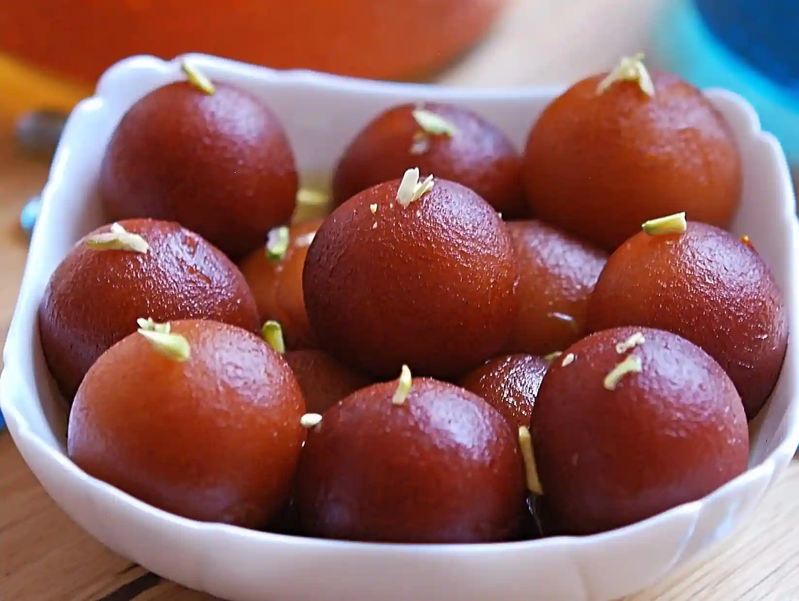
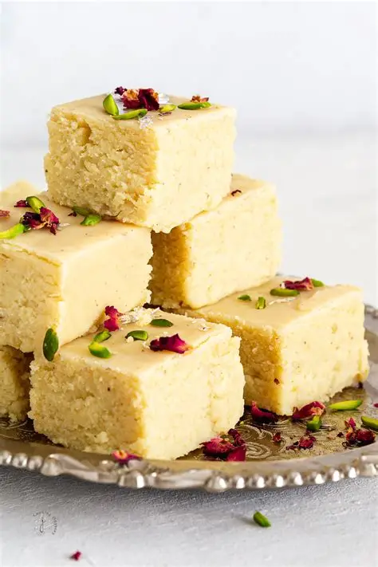

Gulab Jamun
Ingredients
- 1 cup milk powder
- ¼ cup all-purpose flour (maida)
- 2 tbsp ghee (clarified butter)
- ½ tsp baking soda
- 2–3 tbsp milk (as needed for dough)
- Oil or ghee for deep frying
For Sugar Syrup:
- 1 ½ cups sugar
- 1 ½ cups water
- 3–4 cardamom pods (crushed)
- Few strands saffron (optional)
- 1 tsp rose water (optional)
Steps to Make
- In a bowl, mix milk powder, flour, baking soda, and ghee.
- Add little milk gradually and make a soft, smooth dough (not sticky). Rest for 5–10 minutes.
- Meanwhile, make sugar syrup: boil sugar + water until slightly sticky,
add cardamom, saffron, and rose water. Keep warm. - Shape the dough into small smooth balls (no cracks).
- Heat oil/ghee on low-medium flame. Fry balls gently until golden brown.
- Immediately soak the hot gulab jamuns in warm syrup for at least 2 hours.
- Serve warm or chilled, garnished with pistachios or rose petals.

Barfi
Ingredients
- 2 cups milk powder
- 1 cup condensed milk
- 2 tbsp ghee (clarified butter)
- ½ cup milk
- ½ tsp cardamom powder
- Chopped nuts (pistachios, almonds) for garnish
Steps to Make
- Grease a tray/plate with ghee and keep aside.
- In a pan, heat ghee and add milk + condensed milk. Stir well.
- Add milk powder slowly and mix to form a smooth lump-free mixture.
- Cook on low flame until mixture thickens and starts leaving the sides of the pan.
- Add cardamom powder and mix.
- Transfer mixture to greased tray and spread evenly.
- Garnish with chopped nuts and press lightly.
- Let it cool for 1–2 hours, then cut into square/diamond-shaped pieces.
